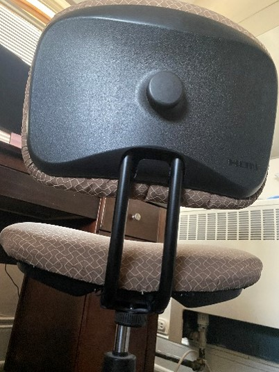
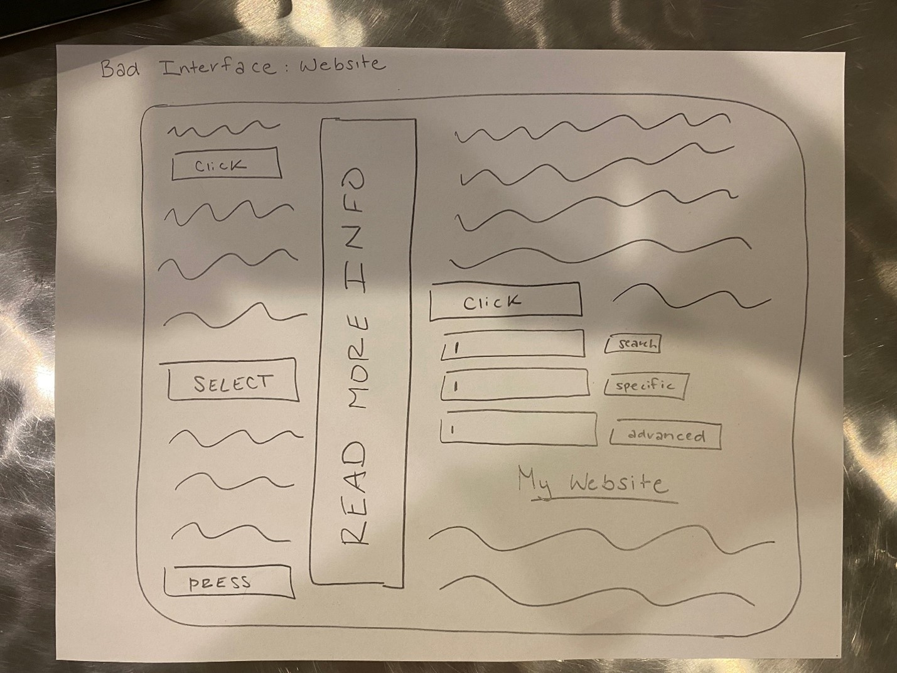

Welcome to My Blog
UI Interview Prep
November 25, 2024
When preparing for UX interviews, I will focus on demonstrating my process, problem-solving skills, and collaboration abilities through clear, real-life examples. For instance, when asked about my design process, I will explain how I approach projects methodically, starting with user research to uncover needs, followed by ideation, prototyping, testing, and iteration. I will highlight how I choose research methods—such as interviews, surveys, or usability tests—based on the project’s goals.
When balancing user needs with business objectives, I will prioritize user-centered design while ensuring alignment with organizational goals, emphasizing communication and stakeholder collaboration. If asked about challenges, I will share examples of overcoming obstacles through teamwork and innovative problem-solving, focusing on measurable results. Throughout, I will aim to convey adaptability and enthusiasm for designing impactful user experiences.
#Freeform
Inclusive Design 2
October 21, 2024

Here I mapped out the 4 constraints discussed in the reading. Physical Constraints constrain possible outcomes. Semantic Constraints rely upon the meaning of the situation to control the set of possible actions. Cultural constraints rely upon accepted cultural conventions, even if they do not affect the physical or semantic operation of the device. Logical constraints decide where pieces or actions should go and what the expected outcome of that would be. All of these constraints impact the user in terms of how they interact with a product. The more constraints placed can result in the user having an easy time navigating a webpage for example if there is only one logical path to take but if the user steers off of assumptions this can lead to them getting very stuck. Few constraints can provide the user with more choice and freedom but also can lead to a variety of unexpected results. It is important to remember the possible outcome of each constraint placed and how it can affect the user and their experience.
#ConceptMap
Inclusive Design 1
October 21, 2024

The purpose of this reading was to share with the reader how they should stand up to their boss when it comes to design choices. The author further gets his point across by even writing emails that the reader could send to their boss if they deemed it necessary. One of these design choices is when the boss suggests lots of pop-ups and sign-up forms when a user enters a website. While the boss may have good intentions, he probably doesn’t realize how this would be overwhelming for a user and how it leads to a decrease in traffic. The author also makes sure to point out that sometimes these “bad” ideas suggested can be turned into good things with enough brainstorming and testing.
One example of a website that I thought did a good job on their home page was Nike. When you first enter the website, you are not hit with tons of pop-ups and sign-ins. You are able to actually explore the page and find the content you want.
#DirectedAnalysis
User Testing 101
October 18, 2024
Uniqueness
The word I chose for this reading passage was “uniqueness” because when designing a web page, it is crucial to recognize there is not standard user. Each person who iterates with your website will have different goals and values they want communicated through the application. A key problem in web design is that web designers, developers, and other stakeholders tend to project their preferences onto users, assuming that most users share their opinions. After reading this passage and reflecting, I realized that this may apply to me as well. Sometimes I believe my idea is the best because it is most applicable to my own life, not considering how others have their own experiences and outlook. This is something important to remember in my own career when I am working on teams. Recognizing the differences between people in a group can help to make more productive conversations and overall decisions.
#WordJournal
Debriefing User Tests
October 18, 2024
Iteration
I chose the word "Iteration" because the reading emphasizes the importance of conducting multiple rounds of testing with small groups of users rather than one large group. This concept is crucial in design because the iterative process allows you to find and address issues progressively. Rather than testing a large group in one round, smaller groups (typically three users) allow for quick testing, fixing, and retesting cycles, which ensures that more problems can be identified and resolved in subsequent rounds. In my career, remembering to iterate will help me focus on continuous improvement rather than trying to perfect everything in one go, making it more manageable and effective. In addition, iteration can help me dive deeper into situations and problems and find new and creative solutions.
#WordJournal
Mockups
October 8, 2024
"Emotion in storytelling is to a presentation as seasoning is to a meal."
Just as seasoning enhances the taste of a dish, making it more enjoyable and memorable, emotion through storytelling enriches a presentation. A story adds depth, humanizing the content, which helps the audience connect on a personal level. Without seasoning, a meal can taste bland and boring. Similarly, a presentation without emotional resonance can feel fake which makes it less impactful to the viewer. Emotion keeps the audience engaged, making the key points more relatable and memorable. This is important to remember in my career as I present meaningful projects. In order to have my listeners connect and engage with what I am saying, I need to add emotion and dramatics.
#ApproximateAnalogy
Portfolio and Design Narratives
October 8, 2024
Personality
The word I chose was ‘personality’ because that is essentially what you want to convey in your UI portfolio. When an employee goes to see your project, they are also seeing your own style and that is very important to show. If you have more of a modern and clean look, you are going to seek a different company then possibly a more vibrant and expressive portfolio. This is important because an employer wants to see who you are and what your vibe is. When considering my own personality I think I will need to create a clean, light, and airy looking portfolio because that is the aura I want to convey.
#WordJournal
Navigation and Values
October 4, 2024
Self-Awareness
This reading focused on how an individual can find their values and how that can help improve the relationships of a team. I chose the word “self-awareness” because I think people struggle with being honest with themselves and the values that truly represent them. While this is a hard task to do, it is vital for the success of a team. When you are aware of your own strengths and values, you can better align yourself with your own work and furthermore the work of the team. I think a lot of conflict can arise when people have contrasting viewpoints on a matter or place different significances on a topic. By understanding why you do something the way you do or why you can about one aspect more than another, it allows yourself and the team to comprehend the actions you may take and then together, as a group, make progress towards the goal at hand.
#WordJournal
Design Systems
October 4, 2024
Consistency
I chose "consistency" because it is the reoccurring message throughout the article. Whether it's deciding between title or sentence case, selecting the right vocabulary, or localizing content, consistency is vital to creating a smooth flowing website that is easy for users to interpret. This concept is critical in ensuring that a product is easy to use, reliable, and professional. In my career, maintaining consistency in content and design will help build user trust and create a seamless, intuitive experience across all components of a product. This ensures clarity and prevents confusion, fostering a sense of control and understanding for the user.
#WordJournal
Signifiers and Affordances 2
September 10, 2024
Blame
I choose the word “Blame” for this section because that is, as the author describes, a common feeling amongst users when they are dealing with a poorly designed user interface. The blame can go multiple ways. A customer could blame the company for a bad designed application and then never use any of their products again. What the author really touched on though was how users will self-blame when they are unable to use a product. This happens frequently with new technologies and leads to users feeling incompetent, when really, the app was designed to not be user friendly. Users were basically set up to fail which can be frustrating for everyone involved. This is why user design is so important.
Furthermore, understanding how the user thinks and interacts with an app is vital so you can avoid blame as much as possible. As I think of my career, I need to remember that not everyone is in the technology field and some words I use may not make sense. I must be able to explain everything I do in addition to making all apps user friendly with minimal errors so they don’t blame themselves and truly enjoy the application that I am creating.
#WordJournal
Signifiers and Affordances 1
September 10, 2024
This first chapter focused on how objects used in everyday life are designed and the joys and frustrations created by them. At the beginning the author discussed how the same object can be designed in many ways causing confusion for people. His example was a door and how a door can be pushed, pulled, revolved, sliding, and probably more. Another emphasis was on visibility, which was centered around what people see in design features. A small feature may seem irrelevant but effect how a user would interact with an object. These two concepts reminded me of an inconvenience in my own life: my chair.

As the author described, a chair could have many different designs and features. For example, the chairs I am used to have a lever that would allow it to rise or lower. This chair does not though which meant I would need to relearn how to use this object. It would not be an issue if the chair had visibility features to show me how to adjust the height, but it does not. I believe the design of this chair has failed in both areas making it a frustrating experience for the user.
#DirectedAnalysis
Design Rules
September 4, 2024
This reading focused heavily on design features and making websites/interfaces easy to navigate for users. When a user is working with your interface, there should be a clear path for them to take and readable and clear buttons that should be pressed. Often, the user will blame themselves for features of a website that they do not understand and this should be the designers responsibility to fix. Because of this reading, I was inspired to draw a poorly designed interface that is almost impossible to understand for a user.

Following the readings, NOT to do, I added in many features that would contribute to a poor user experience. First, I titled the interface in a location that would not catch the user’s attention. I also added in many buttons, all labeled with different names so the user would not understand the purpose of each. In addition, I made all the text the same size so it would not stick out to the user in any way. Finally, I included multiple search bars with all different labels that would all do the “same thing”. These features and just the overall layout of the interface would be very confusing for the user and would create a bad experience.
#SketchInspo
Aesthetic Design
August 26, 2024
This reading discussed a lot of the importance of design features and more specifically the user of space. The author stated that white space is very important in design and can really elevate the appearance of an interface. I made an analogy that white space is to design as breaks are to a schedule. White space can elevate a design because by having white space, a viewer can really home in on the details, purpose, or message of the design. I compared the white space to a break in my schedule. When creating my schedule for a day, I could pack it to the max, doing task after task and chore after chore. While it may seem efficient at first, upon closer inspection, this is a flawed approach because without a break, I become less productive due to tiredness. Just like white space in a design, you need breaks in a schedule to give time to really focus on the important aspects and give your full effort and attention. Even though it doesn’t seem packed or full, it is more successful because you are able to put all your energy and focus into a smaller number of tasks or a smaller portion of the overall design.
#Freeform
Colors 2
August 26, 2024
When reading this section, I was inspired by the first portion of the reading that spoke about the personalities of color. While I did believe that each color held a unique sort of vibe, I never considered it as the color having a personality which is an interesting concept. Because of this, I decided to do a small experiment of my own. Since I was sitting downstairs in my Greek house while doing this reading, I decided to ask girls who walked by what their favorite color was. When they answered, I then read of the personality of the color and asked them how well it matched their perception of their own personality. Surprisingly enough, there was a correlation between the two. The first girl I asked was very bubbly and energetic. When I asked her the question, she stated that her favorite color was red. I read to her that red is “easily bored” and “passionate about life.” She responded, “OMG, that is totally me; it makes so much sense.” I found this a very amusing discovery. When I went to self-reflect on what my favorite color is, my mind instantly jumped to blue. Then I re-read the blue description, and it made sense to me. I do value “a sense of calm and order in your life.” Even further down when it made the distinction between a lighter blue and a navy, I completely agreed. I just thought this was a very cool discovery and wanted to share the mini experiment that I had conducted.
#Freeform
Colors 1
August 26, 2024
This reading focused primarily on colors and the different ways they can be organized. They can be organized into primary and secondary, hot and cold, light and dark, and so many more. Because of the focus on the different grouping of colors and how they can go together, I decided for this reading to do an observational by looking around my room at Chi Omega and finding different color schemes. A lot of my decor is monochromatic in a pink color scheme. One poster contains a pink gradient, and another contains a pink picture with pink text and outlines. When I look at my computer screen, the default Microsoft background utilizes secondary colors in a bubbly pattern. These are very saturated colors and make the screen really pop. One sticker that I have sitting next to my computer uses all tertiary colors with a bright red background. The raspberry and lime sparkling water I am drink right now uses a pink and green complementary scheme that makes the colors really pop. I found it very cool to look around my room and see the different color schemes in use and it help me to generate ideas about how I can utilize different color combinations.
#Freeform